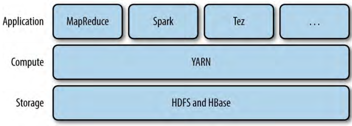

Chapter 4.YARN
Apache YARN（Yet Another Resource Negotiator）是一个Hadoop的集群管理系统。YARN在Hadoop 2引入以提升MapReduce的实现，但是它是通用的，可以支持其它的分布是运算范式。
YARN提供了请求和使用集群资源的API，但是一般的用户代码是不直接使用这些API的。用户一般是使用分布式运算框架提供的高层次API，它们基于YARN构建并且对用户隐藏了资源管理的详情。
图 4-1 YARN应用

如图，一些（集群应用层）分布式运算框架（MapReduce、Spark、Tez等）作为YARN的应用运行在集群运算层（YARN）和集群存储层（HDFS和HBase）之上。
除了图4-1所示，还有基于集群应用层框架的应用层。例如Pig、Hive和Crunch这些处理框架运行在MapReduce、Spark、Tez（基于某个或所有三个）之上，不和YARN直接交互。